Proyectos
Proyectos desarrollados aplicando tecnologías modernas y buenas prácticas de desarrollo de software.
ReservaFácil
Aplicación web para gestionar reservas de vuelos y hoteles, permitiendo a los usuarios consultar opciones, realizar reservas y administrar su información desde un mismo sistema.
Tecnologías
Características principales
Mis responsabilidades en el proyecto
- Desarrollo de la lógica principal de la aplicación.
- Implementación del sistema de autenticación y gestión de usuarios.
- Desarrollo de las funcionalidades relacionadas con las reservas.
- Integración y gestión de la información almacenada en la base de datos.
- Implementación del proceso de recuperación de contraseña.
- Desarrollo y organización de las diferentes vistas de la aplicación.
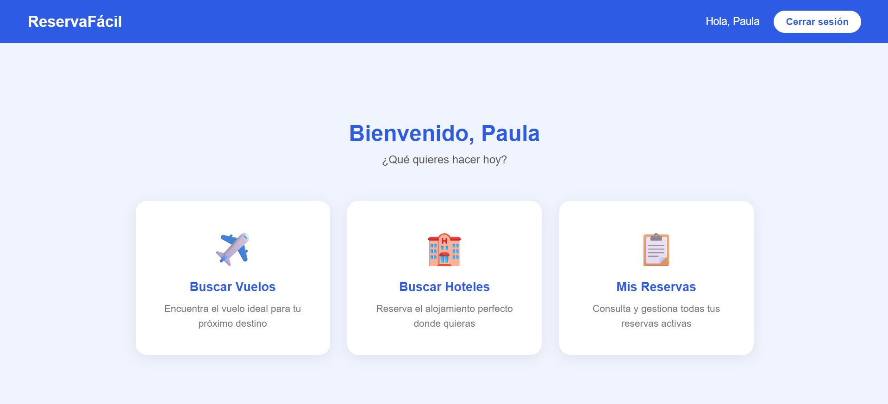
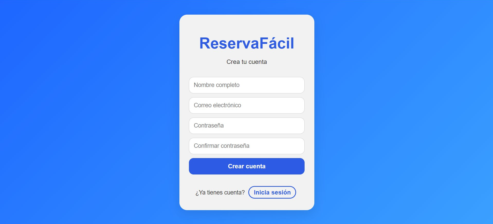
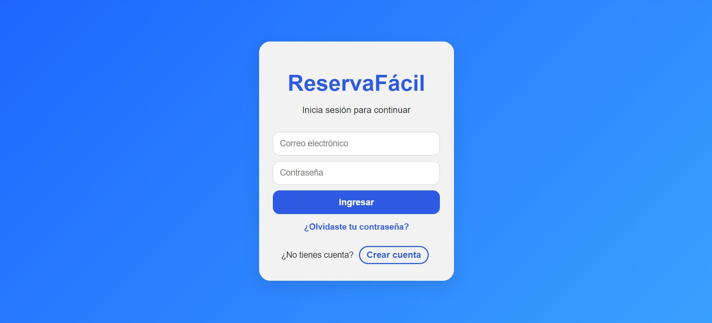
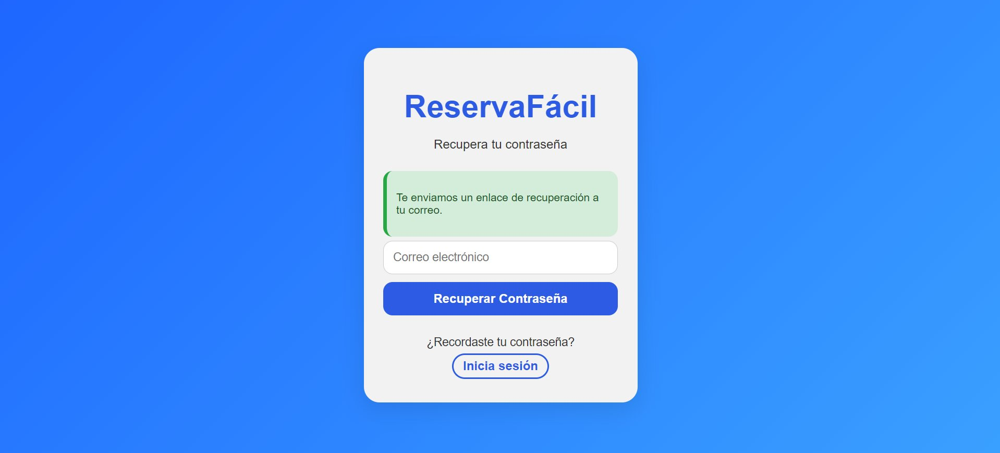
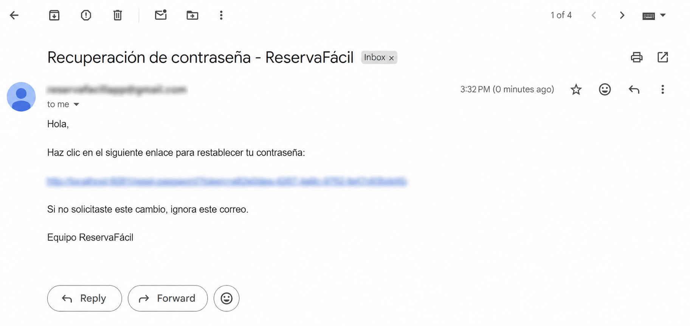
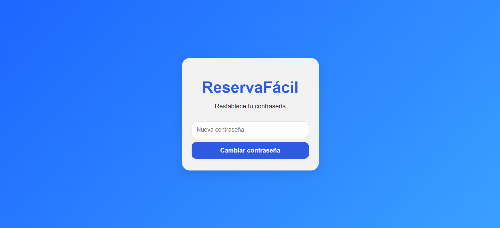
Tartas Ara
Landing page para una pastelería artesanal, diseñada para presentar sus productos, permitir la personalización de pedidos y facilitar el contacto directo con el negocio.
Tecnologías
Características principales
Mis responsabilidades en el proyecto
- Desarrollo de la estructura y organización de la página.
- Creación de la interfaz visual y adaptación de la experiencia para diferentes tamaños de pantalla.
- Desarrollo de la lógica para personalizar los pedidos.
- Implementación del resumen dinámico de la selección del cliente.
- Integración del proceso de pedido con WhatsApp.
- Implementación de animaciones y elementos interactivos.
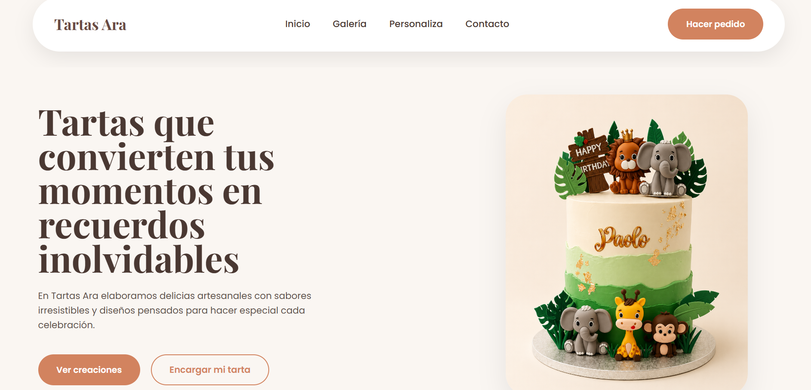
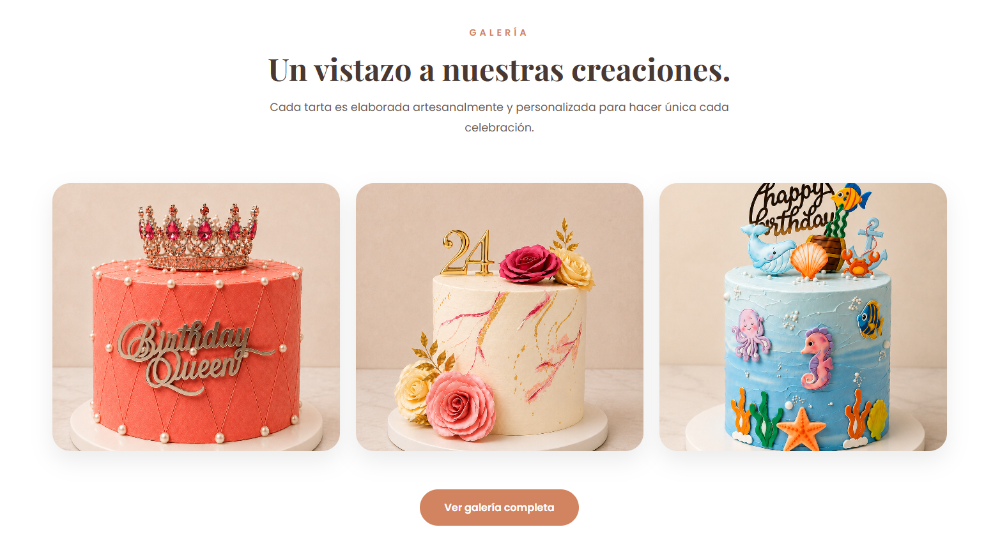
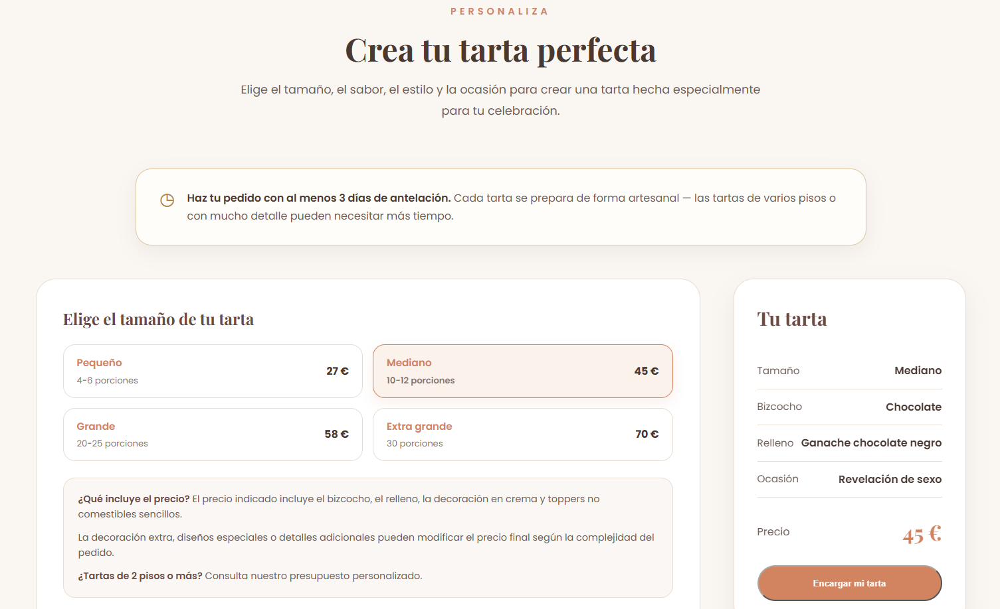
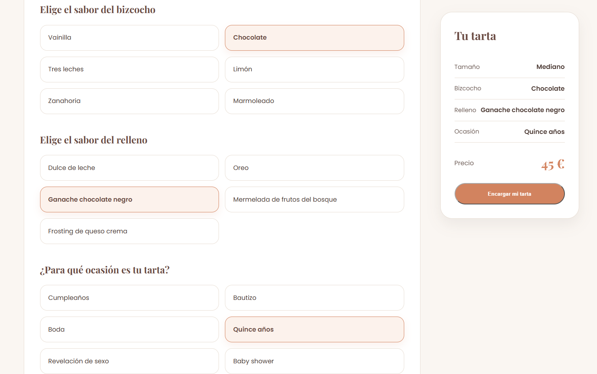
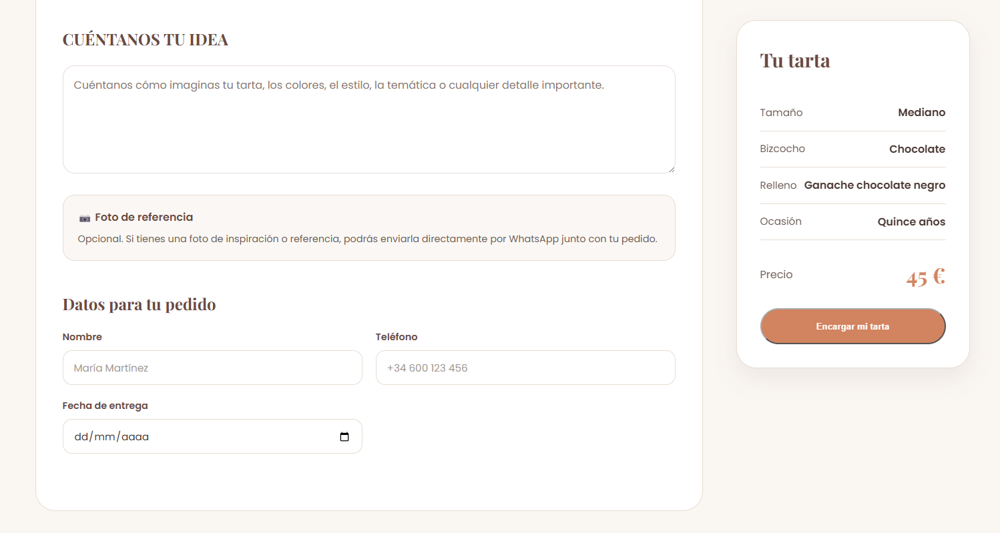
Fresh Cream Bot
Chatbot de WhatsApp desarrollado para automatizar la atención y gestión de pedidos de un emprendimiento de fresas con crema. El sistema guía al cliente durante el proceso de compra y facilita el registro y seguimiento de los pedidos.
Tecnologías
Características principales
Mi responsabilidades en el proyecto
- Desarrollo de la lógica y flujo de conversación del chatbot.
- Implementación de la comunicación entre el chatbot y WhatsApp.
- Desarrollo del proceso de toma y confirmación de pedidos.
- Implementación del registro automático de la información de los pedidos.
- Desarrollo de las notificaciones relacionadas con los nuevos pedidos.
- Implementación de validaciones para evitar el procesamiento de mensajes duplicados.
- Desarrollo de la opción para derivar la conversación a atención humana.
Flujo de atención
El bot acompaña al cliente durante el proceso de compra, desde el inicio de la conversación hasta la confirmación y registro del pedido.
Inicio
El cliente inicia la conversación mediante WhatsApp.
Pedido
El bot guía al cliente para seleccionar el producto y recopilar la información necesaria.
Confirmación
El cliente revisa la información y confirma su pedido.
Registro
El pedido queda registrado y se genera la notificación correspondiente.